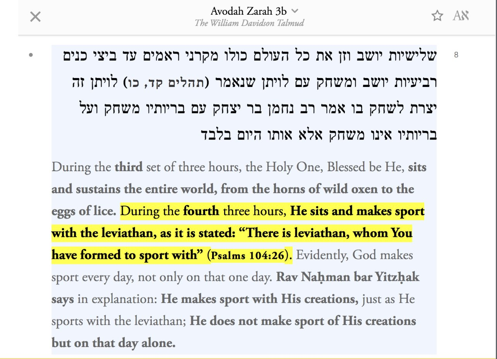
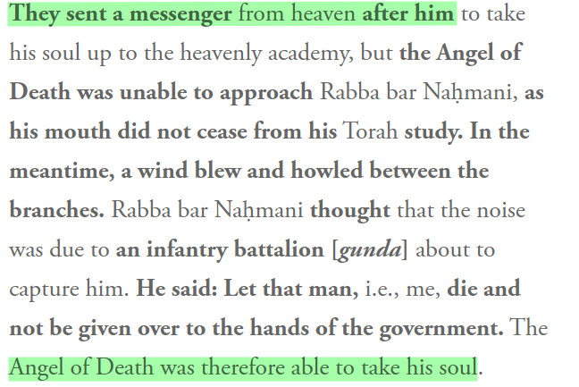

The Talmud says that God studies the Torah
The Talmud and OT say that God plays with a Leviathan

The Talmud says that God rides on a Cherub
The Talmud Says That God Wears Phylacteries
The Talmud Says Jews Can Create like God and are Partners in Creation with God
God Regrets in Both the Talmud and the OT (Also Racism in the Talmud)
The Zohar Says that Jewish Souls are Supernatural and Derived from God
The Zohar (1:47a) says Jewish souls are “supernatural” because they are derived directly from God!
In stark contrast, souls of Gentiles are derived from impurities and are “demonic” in nature. Gentile souls are also compared to “foreskin”
Kabbalist Rabbi Says that One Can Achieve Union With God
BLASPHEMY!
Rabbi Abraham Abulafia, a Kabbalist,¹ expressed on several occasions that one could achieve union with God!
God allows sacrifice for Satan according to the Talmud
“Aaron shall take the two he-goats & let them stand before יהוה at the entrance of the Tent of Meeting; and he shall place lots upon the two goats, one marked for יהוה and the other marked for Azazel.”
(Leviticus 16:7-8)
Satanic ritual
The Talmud Says that God Cries
The Talmud Says that God Debates with Rabbis in Heaven

Rabbis Said that God is not Pure and Has Leprosy
 The debate was about "uncertainty the spot or the hair"
God said "he is pure"
What does the mishnah say:
This is the ruling. Now the debate was "if you dont know what came first the snow white leprous sore or the hair is he pure". God said "yes". The sages said no
——
The Talmud Says God Prays
The debate was about "uncertainty the spot or the hair"
God said "he is pure"
What does the mishnah say:
This is the ruling. Now the debate was "if you dont know what came first the snow white leprous sore or the hair is he pure". God said "yes". The sages said no
——
The Talmud Says God Prays
 According to Judaism the Majority Vote Can Overrule What God Says
https://www.sefaria.org/sheets/294827?lang=bi
God Rests According to the Tanakh
“It will be a sign between me and the Israelites forever, for in six days the LORD made the heavens and the earth, and on the seventh day he rested and was refreshed.’”
(Exodus 31:17)
Some may respond and say that all this verse means is that God ceased and stopped, and didn’t actually literally rest and refresh. However if we go to 2 Samuel 16:14, the same Hebrew word used for refresh back in Exodus 31:17 is used in 2 Samuel 16:14 to describe the weariness of a king.
“The king and all the people with him arrived at their destination exhausted. And there he refreshed himself.”
(2 Samuel 16:14)
https://m.youtube.com/watch?v=5YSmKzKjQng
https://m.youtube.com/watch?v=-i4KuTut99A
https://m.youtube.com/watch?v=jeBnJYfqSxw&t=1s
https://m.youtube.com/watch?v=4HT3UJn_Qng
https://m.youtube.com/watch?v=7Qw-wsk6u0c
https://m.youtube.com/watch?v=N5bpfbGCMkU
https://m.youtube.com/watch?v=4Vdk2G1wgpA
Early Jewish beliefs of anthropomorphism
https://www.jewishvirtuallibrary.org/shi-x0027-ur-komah
https://www.kotzkblog.com/2016/03/74-notion-that-g-d-has-body-in-early.html?m=1
https://m.youtube.com/watch?v=dL330LGJQTw
According to Judaism the Majority Vote Can Overrule What God Says
https://www.sefaria.org/sheets/294827?lang=bi
God Rests According to the Tanakh
“It will be a sign between me and the Israelites forever, for in six days the LORD made the heavens and the earth, and on the seventh day he rested and was refreshed.’”
(Exodus 31:17)
Some may respond and say that all this verse means is that God ceased and stopped, and didn’t actually literally rest and refresh. However if we go to 2 Samuel 16:14, the same Hebrew word used for refresh back in Exodus 31:17 is used in 2 Samuel 16:14 to describe the weariness of a king.
“The king and all the people with him arrived at their destination exhausted. And there he refreshed himself.”
(2 Samuel 16:14)
https://m.youtube.com/watch?v=5YSmKzKjQng
https://m.youtube.com/watch?v=-i4KuTut99A
https://m.youtube.com/watch?v=jeBnJYfqSxw&t=1s
https://m.youtube.com/watch?v=4HT3UJn_Qng
https://m.youtube.com/watch?v=7Qw-wsk6u0c
https://m.youtube.com/watch?v=N5bpfbGCMkU
https://m.youtube.com/watch?v=4Vdk2G1wgpA
Early Jewish beliefs of anthropomorphism
https://www.jewishvirtuallibrary.org/shi-x0027-ur-komah
https://www.kotzkblog.com/2016/03/74-notion-that-g-d-has-body-in-early.html?m=1
https://m.youtube.com/watch?v=dL330LGJQTw